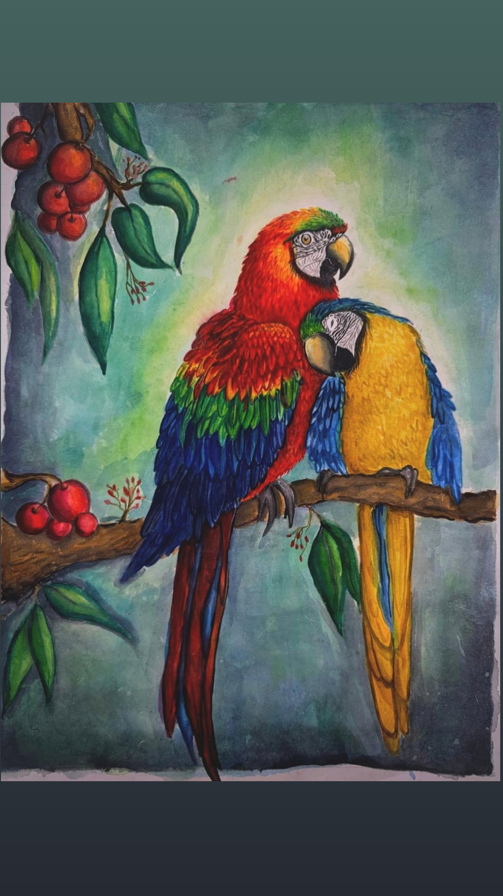

Our Story
10 October
The day everything started. The starting was awkward and rough and it took some time for us to get comfortable with each other, but it was the beginning of something beautiful. I am still sorry about the fact that i was so awkward and shy back then and LITERALLY BROKE UP WITH YOU NOT ONCE, BUT TWICE, but thank you for being patient with me and giving me the chance to know you better.
6 Months
Somewhere along the way, you became my favorite person and my everything. Everything that i dreamt of in a partner, i found in you. It all happened because of you, and i will forever be grateful for that. The best gift that i have ever received from someone:

The unmistakable death stare 😭❤️
Today
8 months later, and I still choose you. I choose you for your smile, your kindness, the way you care, the way you make me blush(especially when you look at me with those eyes,ufff...), the way you love me, and everything that makes you, you. i hope that we will continue to create more beautiful memories together, and that our love will keep growing stronger with each passing day. I am so lucky to have you in my life, and I can't wait to see what the future holds for us. Happy 8 months anniversary, my love! ❤️